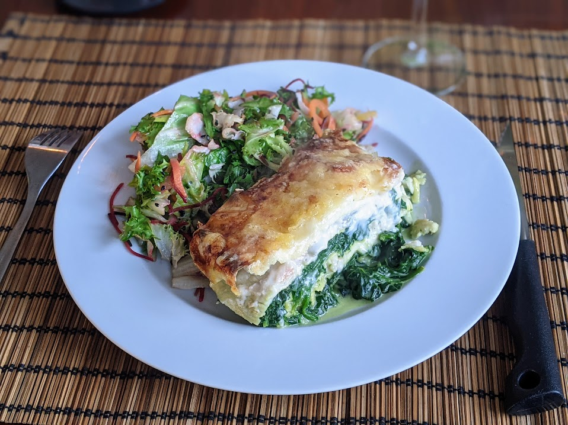

Lasagnes truite-épinards

Pour 4 personnes :
- 12-15 feuilles de lasagnes précuites
- 200g de filets de truite
- 200g de truite fumée
- 800g d'épinards frais
- 15-20cL de crème
- 120-150 grammes d'emmental râpé
- 50 cl de béchamel
- Sel, poivre, beurre
- Laver les épinards et les faire cuire dans une grande poêle avec la crème, à feu moyen, jusqu'à ce qu'il ne reste plus de crème au fond de la poêle. Ça prend pas mal de temps.
- Pendant ce temps, faire chauffer de l'eau dans un grand récipient, et tremper les feuilles de lasagnes une par une (ou en tous cas, en évitant qu'il y ait trop de surface de contact, sinon ça colle) pour les ramollir un peu.
- Découper la truite (fraîche et fumée) en petits bouts.
- Faire préchauffer le four à 210°C. Beurrer un moule copieusement, mettre un peu de béchamel au fond, et ajouter une couche de feuiles de lasagnes.
- Répartir un tiers des épinards, un tiers de la truite, un quart de la béchamel, et un quart du fromage sur les feuilles, puis reposer des feuilles de lasagnes sur le dessus. Recommencer deux fois, en salant et poivrant un peu à chaque fois.
- Sur la couche finale de feuilles de lasagnes, verser le reste de béchamel, puis d'emmental. Enfourner.
- Laisser une demi-heure au four (jusqu'à ce que ça soit bien doré sur le dessus), servir à la sortie du four avec une salade.
Retour à la liste des recettes